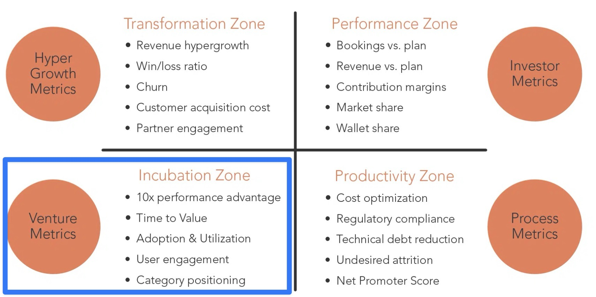

graph TD
A[CTO]
A --> B1[Website Builder Team]
A --> B2[Shopping Cart Team]
A --> B3[Payments Team]
A --> B4[Inventory Team]

7 Mobilize Your Strategy
At this point, you should have developed a strategy for your AI initiatives that can be communicated effectively. Now your organization needs to execute on it. Getting people to take action can be challenging, especially in mature companies. These companies are optimized for their markets and struggle with adopting disruptive innovations like AI. Fortunately, Geoffrey Moore’s Zone to Win framework offers guidance. Over the past decade, I have adapted this framework for AI initiatives. It’s allowed my leadership team to execute with consistency. In this section, I provide you with a step-by-step guide (with examples) for applying this framework.
The Four Zones
The zone-to-win framework separates business activities into four zones:
Performance Zone: This zone represents your core business that generates consistent revenue and profit. This zone focuses on meeting financial targets and maintaining operational excellence. Products and services in this zone are typically mature and well-established.
Productivity Zone: This zone focuses on improving efficiency and effectiveness across the organization. AI initiatives naturally fit here. They can go beyond engineering and into HR, sales, and finance.
Incubation Zone: The Incubation zone is for testing new ideas. It won’t affect your core business right away. This is a safe space to develop and test new business models, especially those using generative AI.
Transformation Zone: The Transformation zone acts as a bridge between the Incubation and Performance zones. This zone integrates your vetted AI initiatives into your core business.
For many AI initiatives, the incubation zone is the most critical starting point.
Step 1 → Clearly define your AI Incubation Zone
- Draw a Hard Line: Keep AI projects separate from core operations when necessary to avoid disrupting what’s already working.
- Lock in Resources: Assign dedicated talent and budget to your AI initiatives: don’t let them compete with the core for scraps.
ACME’s CTO oversees four teams that are responsible for different parts of the product.
It might seem like a good idea to pull members from the AI SEO team into the website builder team, but that’s a critical mistake. Those four teams are laser-focused on ACME’s current product, driving the core revenue that keeps the business afloat. Disrupting that balance could jeopardize your primary source of revenue.
Don’t put the new team directly into the existing org chart
graph TD
A[CTO]
A --> B1[Website Builder Team]
A --> B2[Shopping Cart Team]
A --> B3[Payments Team]
A --> B4[Inventory Team]
B1 -.-> B5[AI SEO Team]
Instead, ACME needs to create a completely separate team dedicated to AI SEO product development. Keep them isolated from the existing teams to avoid conflicts and distractions. Once the AI SEO technology is fully matured, you can integrate it back into the core product without disrupting current operations.
Separating the AI SEO team gives it room to succeed
graph TD
A[CTO] --> B1[Website Builder Team]
A --> B2[Shopping Cart Team]
A --> B3[Payments Team]
A --> B4[Inventory Team]
C[GM of AI SEO] --> B5[AI SEO Team]
Appointing a temporary GM is the smart move to lead an incubation zone initiative like this. The ideal candidate is a high-level manager from Product or Tech - someone with a strong reputation in the organization that the CTO trusts and an intrapreneurial mindset.
Their job? Keep the focus on the big picture and serve as the key liaison with other parts of the business, while leaving the day-to-day implementation to the team.
The GM’s main responsibility is to ensure the team has everything they need to win - whether that’s talent, access to go-to-market strategies, budget, tools, or infrastructure.
Budget must be carved out of the existing operating budget
The AI SEO initiative needs its own dedicated line item in the operating budget. No blending with other projects.
- Keep the budget separate, like the team. This prevents internal competition for resources and minimizes conflict with other initiatives.
- For ACME, we’ve allocated $2M from the operating budget and dedicated 10 people, including the GM, to the AI SEO initiative:
- 1 Product Manager
- 1 Designer
- 4 Software Engineers
- 3 AI Engineers
graph TD
A[GM of AI SEO] --> B1[Product Manager]
A --> B2[Designer]
A --> B3[4 Software Engineers]
A --> B4[3 AI Engineers]
Step 2 → Define the operating model
- Scope: Clearly define the boundaries of the initiative. What will be delivered, and just as importantly, what won’t be delivered. Stay focused.
- Governance: Establish a strong governance structure. How often will the initiative be reviewed by the GM and the executive team? Regular check-ins are critical to ensure alignment and progress.
In the case study, we’ve outlined ACME’s plan to develop an AI-driven SEO optimization product. Just like the website builder, the goal is clear: it must be user-friendly and require minimal technical expertise, making it accessible to non-technical users. Simplicity is key to adoption and success.
A clear scope has specifity and milestones
In Scope for the MVP:
- Focus on six core features for the MVP, ensuring they’re intuitive and require minimal technical expertise from users initially as a standalone product.
- Prioritize ease of use and quick wins for small business owners.
Click for a breakdown of each milestone
| Milestone | Feature | Description |
|---|---|---|
| 1 | Automated Keyword Research and Optimization | • AI Keyword Suggestions: Analyze products and content to recommend relevant keywords, focusing on long-tail opportunities. • Basic Content Optimization: Provide simple guidance for keyword placement in product titles and descriptions. |
| 2 | Content Generation and Optimization | • AI-Generated Product Descriptions: Create basic, SEO-friendly product descriptions to save time for small business owners. |
| 3 | Meta Tags Automation | • Meta Tag Generation: Automatically generate SEO-friendly meta titles and descriptions for product pages. |
| 4 | Technical SEO Recommendations | • Site Speed Insights: Offer basic recommendations for improving page load times, crucial for SEO ranking. |
| 5 | AI-Driven SEO Audits | • Basic SEO Health Check: Provide a simple, automated audit highlighting critical SEO issues like missing meta tags or broken links. |
| 6 | Analytics and Reporting | • SEO Performance Dashboard: Offer a straightforward dashboard tracking key metrics like keyword rankings and organic traffic. |
Out of Scope for MVP:
- Advanced features like voice search optimization, competitor analysis, and link building will be considered for future iterations.
- Complex technical optimizations that require significant user intervention.
Reviews needs to be frequent and defined up front
Example governance structure:
- Weekly product reviews with the GM of AI SEO.
- Bi-weekly updates to the CPTO and executive team.
- Monthly steering committee meetings to assess progress against KPIs and adjust strategy if needed.
Step 3 → Define how you will measure success
- KPIs: Every phase of the initiative must have clear, measurable KPIs to track progress and ensure accountability at each milestone.
- Timeline: Incubation zone initiatives require a defined funding timeline to keep the project on track and ensure timely decision-making
Remember: You’re starting with a blank slate
It’s a good idea to focus on a small number of KPIs for the initaitve.
In ACME’s case they need to first focus on getting the product in front of users and getting feedback on what they actually want.
Good high level KPIs for the AI SEO initiative are:
- Number of users who sign up for the first version of the product
- Number of users who provide feedback on the product
- Number of users who give up on the product
These all focused on time to value and getting user engagement and feedback.
They correspond to the bottom left quadrant of the zone to win framework.

This will help you focus on the most important things and avoid getting distracted by too many metrics.
As the initiative matures you can add more KPIs
Keep your initiative laser-focused on the key value signals that matter most. However, it’s also smart to guide feature development with more detailed, tactical KPIs that provide clarity and direction at each step of the process.
Click for a KPI breakdown for each milestone
| Milestone | Feature | Key KPIs |
|---|---|---|
| 1. Automated Keyword Research | AI Keyword Suggestions | • Keywords suggested per user • Adoption rate • Organic impressions increase |
| 2. Content Generation | AI Product Descriptions | • Descriptions generated • % products using AI descriptions • Product page ranking improvement |
| 3. Meta Tags Automation | Meta Tag Generation | • % pages with AI meta tags • CTR increase • Bounce rate reduction |
| 4. Technical SEO | Site Speed Insights | • Issues identified • Page load time reduction • Mobile optimization improvement |
| 5. SEO Audits | Basic Health Check | • Audits completed • Issues detected/resolved • Site health score increase |
| 6. Analytics | SEO Dashboard | • Dashboard engagement • Usage frequency • SEO metric improvements |
There must be a clear timeline for exit
- The exit point is when you decide whether to double down on the initiative or shut it down entirely.
- The timeline for this initiative is set at 1 year.
- This is a moving target: if the initiative isn’t meeting its KPIs, adjustments will be made based on feedback and progress.
- Each development milestone should take 2-4 months to complete—an ideal pace for a small team to show progress and gather user feedback.
- Paired with high-level initiative KPIs, this is where milestone-specific KPIs become powerful in driving focus and course-correcting as needed.
Step 4 → Keep the company in the loop
- Regular Updates: Consistently share progress with the steering committee and executive team to maintain alignment.
- Transparent KPIs: Make sure KPIs are clearly defined and updated frequently for full transparency.
- Ongoing Communication: Establish a continuous feedback loop to keep the entire company informed and engaged in the initiative’s progress.
Regular updates ensure momentum
- Over-communicate: You can’t update too often. Send weekly emails to the CTO and executive team highlighting lessons learned from product reviews.
- Bi-weekly deep dives: Use your bi-weekly governance meetings to provide more detailed updates. Address any roadblocks the team is facing: whether they’re technical challenges, resource constraints, or issues that require more than the GM’s intervention.
- Monthly steering committee reviews: The steering committee should meet monthly to review KPIs and make necessary adjustments. These meetings are a critical checkpoint to decide whether to continue funding, pivot based on results, or resolve any ongoing issues.
Conclusion
A disciplined approach is crucial for managing higher-risk AI projects and driving them to success. This framework isn’t one-size-fits-all—it may not be right for every company or every AI stage.
But if you’re ready to make a bold AI move, this is where you start to stack the odds in your favor. Ultimately, success is defined by revenue growth. Once your incubation zone initiative starts generating revenue, it’s time to shift how it’s measured and integrate it back into your core operations.
Next, we’ll discuss hiring to build the best team for your AI projects.